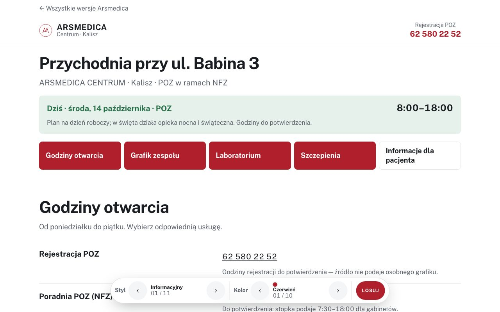
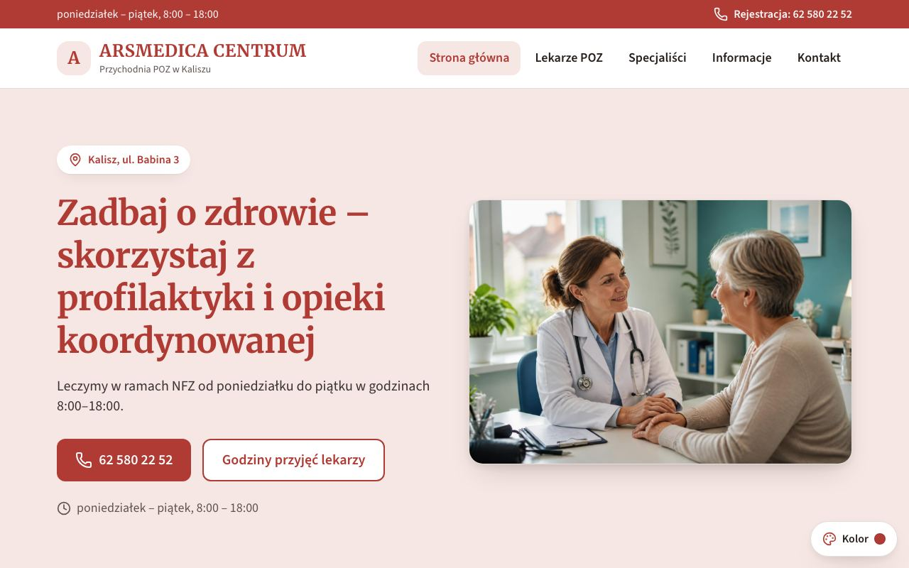
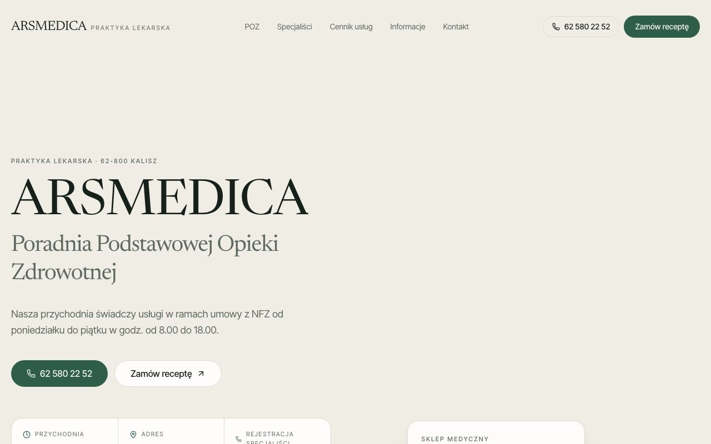
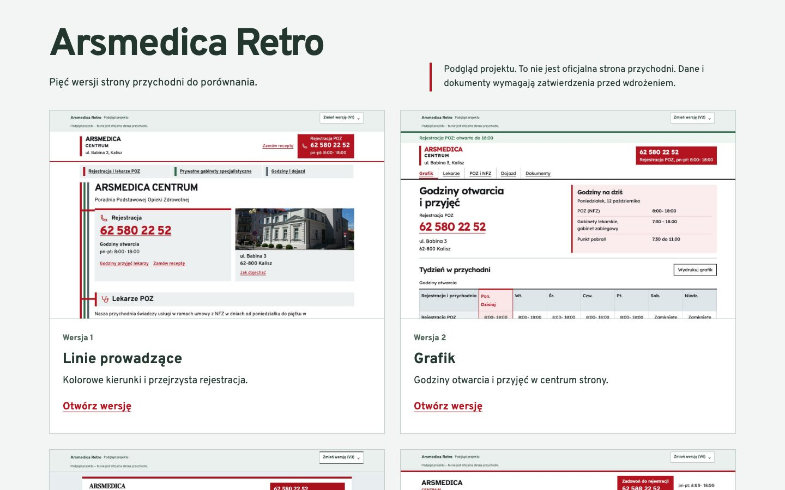

Porównaj projekty stron.
Jeden podgląd dla każdej strony. Style i kolory możesz zmieniać po jej otwarciu.
Pytania do przychodni
Trzy pytania na start, a potem krótka lista dopasowana do odpowiedzi. Można zaznaczać na ekranie albo wydrukować.

Arsmedica Klasyczna
Informacyjna strona z dużymi nagłówkami i rozbudowanymi sekcjami. Style i kolory można zmieniać bezpośrednio w projekcie.
Otwórz stronę
Arsmedica Centrum
Czytelne karty informacji i osobne strony dla lekarzy, specjalistów oraz kontaktu. Zdjęcia pokazują budynek i rejestrację Arsmedica.
Otwórz stronę
Arsmedica Next
Spokojny, redakcyjny układ z dużą typografią. Zdjęcie rzeczywistej rejestracji przychodni uzupełnia informacje dla pacjentów.
Otwórz stronęPołączona 1
Tablica dnia z godzinami POZ, grafikiem lekarzy i informacją o pobieraniu krwi.
Otwórz stronęPołączona 2
Przewodnik po pytaniach pacjenta: godziny, lekarze, laboratorium i szczepienia.
Otwórz stronęRetro — kolekcja eksperymentalna

Arsmedica Retro
Kolekcja pięciu eksperymentalnych układów: od drukowanej ulotki po duży tekst i grafik przyjęć. Bardziej ciekawostka niż główny kierunek.
Otwórz stronę